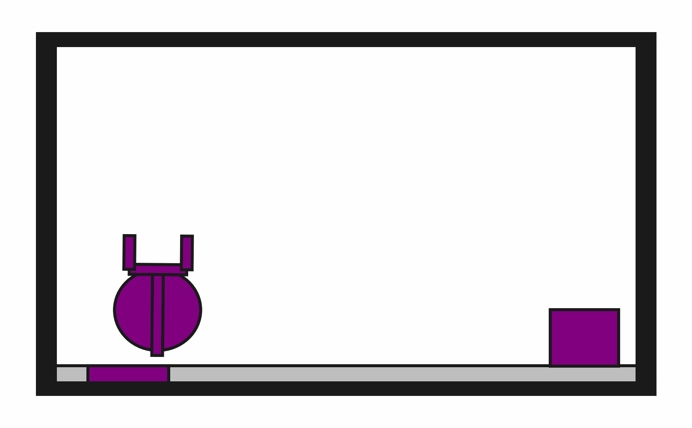

prbench/DynObstruction2D-o0-v0

Description
A 2D physics-based environment where the goal is to place a target block onto a target surface using a fingered robot with PyMunk physics simulation. The block must be completely on the surface.
The robot has a movable circular base and an extendable arm with gripper fingers. Objects can be grasped and released through gripper actions. All objects follow realistic physics including gravity, friction, and collisions.
Observation Space: The observation is a fixed-size vector containing the state of all objects: - Robot: position (x,y), orientation (θ), velocities (vx,vy,ω), arm extension, gripper gap - Target Block: position, orientation, velocities, dimensions (dynamic physics object) - Target Surface: position, orientation, dimensions (kinematic physics object)
Each object includes physics properties like mass, moment of inertia (for dynamic objects), and color information for rendering.
Initial State Distribution
Example Demonstration
Observation Space
The entries of an array in this Box space correspond to the following object features:
| Index | Object | Feature |
|---|---|---|
| 0 | target_surface | x |
| 1 | target_surface | y |
| 2 | target_surface | theta |
| 3 | target_surface | vx |
| 4 | target_surface | vy |
| 5 | target_surface | omega |
| 6 | target_surface | static |
| 7 | target_surface | color_r |
| 8 | target_surface | color_g |
| 9 | target_surface | color_b |
| 10 | target_surface | z_order |
| 11 | target_surface | width |
| 12 | target_surface | height |
| 13 | target_block | x |
| 14 | target_block | y |
| 15 | target_block | theta |
| 16 | target_block | vx |
| 17 | target_block | vy |
| 18 | target_block | omega |
| 19 | target_block | static |
| 20 | target_block | color_r |
| 21 | target_block | color_g |
| 22 | target_block | color_b |
| 23 | target_block | z_order |
| 24 | target_block | width |
| 25 | target_block | height |
| 26 | target_block | mass |
| 27 | robot | x |
| 28 | robot | y |
| 29 | robot | theta |
| 30 | robot | vx |
| 31 | robot | vy |
| 32 | robot | omega |
| 33 | robot | static |
| 34 | robot | base_radius |
| 35 | robot | arm_joint |
| 36 | robot | arm_length |
| 37 | robot | gripper_base_width |
| 38 | robot | gripper_base_height |
| 39 | robot | finger_gap |
| 40 | robot | finger_height |
| 41 | robot | finger_width |
Action Space
The entries of an array in this Box space correspond to the following action features:
| Index | Feature | Description | Min | Max |
|---|---|---|---|---|
| 0 | dx | Change in robot x position (positive is right) | -0.050 | 0.050 |
| 1 | dy | Change in robot y position (positive is up) | -0.050 | 0.050 |
| 2 | dtheta | Change in robot angle in radians (positive is ccw) | -0.196 | 0.196 |
| 3 | darm | Change in robot arm length (positive is out) | -0.100 | 0.100 |
| 4 | dgripper | Change in gripper gap (positive is open) | -0.020 | 0.020 |
Rewards
A penalty of -1.0 is given at every time step until termination, which occurs when the target block is completely "on" the target surface.
Termination Condition: The episode terminates when the target block is successfully placed on the target surface. The "on" condition requires that the bottom vertices of the target block are within the bounds of the target surface, accounting for physics-based positioning.
The definition of "on" is implemented using geometric collision detection:
def is_on(
state: ObjectCentricState,
top: Object,
bottom: Object,
static_object_cache: dict[Object, MultiBody2D],
tol: float = 0.025,
) -> bool:
"""Checks top object is completely on the bottom one.
Only rectangles are currently supported.
Assumes that "up" is positive y.
"""
top_geom = rectangle_object_to_geom(state, top, static_object_cache)
bottom_geom = rectangle_object_to_geom(state, bottom, static_object_cache)
# The bottom-most vertices of top_geom should be contained within the bottom
# geom when those vertices are offset by tol.
sorted_vertices = sorted(top_geom.vertices, key=lambda v: v[1])
for x, y in sorted_vertices[:2]:
offset_y = y - tol
if not bottom_geom.contains_point(x, offset_y):
return False
return True
Physics Integration: Since this environment uses PyMunk physics simulation, objects have realistic dynamics including: - Gravity (objects fall if not supported) - Friction between surfaces - Collision response and momentum transfer - Realistic grasping and manipulation dynamics
References
This is a physics-based version of manipulation environments commonly used in robotics research. It extends the geometric obstruction environment to include realistic physics simulation using PyMunk.
Key Features: - PyMunk Physics Engine: Provides realistic 2D rigid body dynamics - Dynamic Objects: Target and obstruction blocks have mass, inertia, and respond to forces - Kinematic Robot: Multi-DOF robot with base movement, arm extension, and gripper control - Collision Detection: Physics-based collision handling for grasping and object interactions - Gravity Simulation: Objects fall and settle naturally under gravitational forces
Research Applications:
- Robot manipulation learning with realistic physics
- Grasping and placement strategy development
- Multi-object interaction scenarios
- Physics-aware motion planning validation
- Comparative studies between geometric and physics-based environments
This environment enables more realistic evaluation of manipulation policies compared to purely geometric versions, as agents must account for momentum, friction, and gravitational effects.